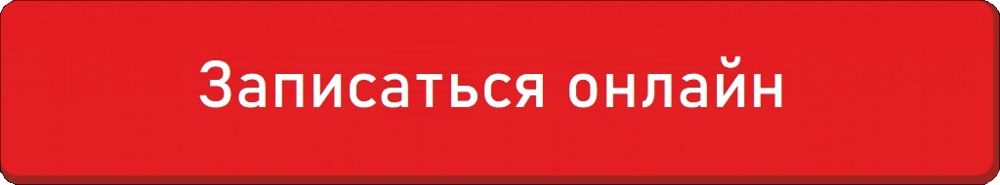

Новости и объявления
Объявления о режиме работы, соревнованиях и жизни комплекса. Скидки — в разделе «Акции».
-
 1 этап турнира Кубок Золотого Кольца 2023
Бассейны
1 этап турнира Кубок Золотого Кольца 2023
Бассейны
- 14 июля Спорткомплекс закрыт! Бассейны
-
 15 апреля - третий день Чемпионата России по плаванию
Бассейны
15 апреля - третий день Чемпионата России по плаванию
Бассейны
- 18-й Чемпионат мира по плаванию в ластах CMAS среди юниоров Бассейны
- 2 этап "RUSTIC CUP" г. Ижевск Бассейны
- 27 октября ограничения работы бассейна Бассейны
- 3 тур Первенства России по водному поло Бассейны
- 30 марта количество дорожек для свободного плавания ограничено Бассейны
- 30 сентября ограничение работы бассейна и изменение расписания в Центре плавания Бассейны
- 5 этап Кубка Золотого Кольца по плаванию, 28-29 сентября 2024 Бассейны
- 5 золотых медалей на II Играх стран СНГ (плавание) Бассейны
- 9 апреля ограничение работы бассейна Бассейны
- Бесплатная заморозка клубных карт Бассейны
-
 Бронза на Первенстве Мира в Греции 2025г.
Бассейны
Бронза на Первенстве Мира в Греции 2025г.
Бассейны
- Чемпионат и Первенство Пермского края по плаванию 10-12 февраля. Итоги! Бассейны
- Чемпионат и Первенство ПФО по плаванию 19 марта 2024г. Бассейны
- Чемпионат и Первенство по плаванию ПФО 25-28 октября 2024 Бассейны
- Чемпионат и Первенство России по подводному спорту, г. Балаково! Бассейны
- Чемпионат мира по подводному спорту в г. Белграде, Сербия 10-17 июля Бассейны
- Чемпионат Пермского края по мини водному поло 21.12.24 Бассейны
- Чемпионат Пермского края по плаванию 2024 г. Бассейны
- Чемпионат Пермского края по плаванию осень 2023 Бассейны
- Чемпионат Пермского края по синхронному плаванию 2023 Бассейны
-
 Чемпионат России по подводному спорту г.Новосибирск 2025 г.
Бассейны
Чемпионат России по подводному спорту г.Новосибирск 2025 г.
Бассейны
- Cоревнования по плаванию в рамках XII летней Спартакиады учащихся 2024 Бассейны
- Детская секция триатлона на базе Спорткомплекса Олимпия Бассейны
-
 Детский бассейн "Олимпик" открыт для родителей с детьми!
Бассейны
Детский бассейн "Олимпик" открыт для родителей с детьми!
Бассейны
- Детский бассейн «Олимпик» открыт для родителей с детьми до 10 лет (26.08-02.09) Бассейны
- Дополнительные группы по профилактике плоскостопия и сколиоза Бассейны
-
 Двукратный олимпийский чемпион по плаванию Рылов Евгений в «Олимпии!»
Бассейны
Двукратный олимпийский чемпион по плаванию Рылов Евгений в «Олимпии!»
Бассейны
- Ещё одна медаль добавлена в коллекцию Киры Манохиной! Бассейны
- Финал Первенства Пермского края по водному поло г. Березники! Бассейны
- г. Березники 22 февраля! Первенство края по водному поло! Бассейны
- График проведения родительских собраний центра плавания - зима 2023/2024 Бассейны
- График работы Спорткомплекса 8 марта Бассейны
- График соревнований в Спорткомплексе «Олимпия» на 2023 год Бассейны
- Идём на фестиваль в Олимпию 11 августа! Бассейны
- Исследование на энтеробиоз с 24 февраля по 2 марта в Спорткомплексе Бассейны
- Итоги 3-го дня соревнований по плаванию Первенство России г. Екатеринбург Бассейны
- Итоги Чемпионата и Первенства Пермского края по плаванию с 14-16 февраля Бассейны
- Итоги Краевых соревнований по плаванию с 10 по 12 сентября! Бассейны
-
 Итоги матчевых встреч г. Челябинск 2025г.
Бассейны
Итоги матчевых встреч г. Челябинск 2025г.
Бассейны
- Итоги Первенства края по водному поло 17.05.25 Бассейны
-
 Итоги Первенства России по подводному спорту, г. Балаково 25-29 июня
Бассейны
Итоги Первенства России по подводному спорту, г. Балаково 25-29 июня
Бассейны
- Итоги первого дня Первенства г. Перми по плаванию 27 января! Бассейны
- Итоги первого этапа соревнований "Путь чемпиона" г. Киров Бассейны
- Итоги первого краевого фестиваля проекта «Умею плавать» 25 мая 2024 Бассейны
- Итоги соревнований Первенства Пермского края по плаванию "Веселый дельфин" с 5-7 марта Бассейны
- Итоги соревнований по плаванию г. Казань 19-20 апреля "НАЦПЛАВ-ДЕТИ, lll - ЭТАП. Бассейны
- Итоги соревнований по плаванию "ll этап первенства Бардымского муниципального округа" Бассейны
- Итоги соревнований по плаванию Rustic Cup-1 этап. г. Ижевск 27.02-01.02 Бассейны
- Итоги соревнований по плаванию Rustic Cup-4 этап. г. Ижевск 24.10-26.10 Бассейны
- Итоги соревнований по плаванию "Уральская Лига плавания USL" г. Первоуральск Бассейны
- Итоги соревнований программы Класс 28.04.2024 Бассейны
- Итоги соревнований программы "Класс" ВЕСНА 2025 Бассейны
- Итоги XXIV Открытый турнир по плаванию «Уральский дельфин» 23-25 мая 2024 Бассейны
- Изменение режима работы бассейна 28 февраля - 3 марта Бассейны
- Изменения в группах Центра Плавания 01.03.25 - 15.03.25 Бассейны
- Изменения в расписании аквааэробики! Бассейны
- Кабинет ЭКГ временно не работает до 30.04.2024 Бассейны
- Кафе на смотровой площадке открыто Бассейны
- Кира Манохина — серебро, бронза и новый юношеский рекорд России! Бассейны
- Кира Манохина - серебряный призёр Первенства мира! Бассейны
- Кира Манохина завоевала бронзу на чемпионате России! Бассейны
- 17 июня Кубок по мини водному поло среди любителей Бассейны
- Кубок России по подводному спорту февраль 2024 Бассейны
- «Кубок Золотого Кольца» 24-25 февраля 2024 Бассейны
- Кубок Золотого Кольца (финальный турнир года, плавание). г.Москва, 30.11-01.12.2024 Бассейны
- "Летний класс" - плавание для летних лагерей и площадок! Бассейны
- Лига плавания "БМ 2026"- 1 этап памяти Л. И. Моняковой. Бассейны
- Мастер-класс от чемпиона Мира и Европы Сергея Фесикова! Бассейны
- Майские праздники в Олимпии! Бассейны
- Международные соревнования «Спортивные игры стран БРИКС» в г.Казань 19-21 июня 2024 г. Бассейны
- Межрегиональные соревнования по плаванию в г.Челябинск 21-22 января Бассейны
- Мы в ТОП-10 спортивных Центров Перми! Бассейны
- Налоговый вычет -13% за услуги Спорткомплекса Бассейны
- Народная премия - спортивный центр города Бассейны
- Наши ребята за два дня установили третий юниорский мировой рекорд! Бассейны
-
 В Санкт-Петербурге прошел новогодний турнир «На призы Деда Мороза»
Бассейны
В Санкт-Петербурге прошел новогодний турнир «На призы Деда Мороза»
Бассейны
- Огненная новость с Чемпионата России! Бассейны
- Ограничение работы бассейна 10 декабря Бассейны
- Ограничение работы бассейна 2 декабря Бассейны
- Режим работы бассейна 27-28 февраля Бассейны
- Ограничение работы бассейна 27 апреля Бассейны
- Ограничение работы бассейна с 14 по 16 ноября Бассейны
- Ограничения работы бассейна 17 и 18 мая 2025 г. Бассейны
- Осторожно, гололед! Бассейны
-
 Открыт кабинет ЭКГ
Бассейны
Открыт кабинет ЭКГ
Бассейны
- Открыт набор в спортивные группы детей 2013-2014 г.р. Бассейны
- Открытое первенство г.Челябинска по водному поло! Бассейны
- Открытое Первенство Венгрии по плаванию 2024г. Бассейны
-
 Отличные новости от «Олимпии»!
Бассейны
Отличные новости от «Олимпии»!
Бассейны
- Парковка для родителей детей Центра плавания Бассейны
- Первая медаль с Первенства Европы по плаванию! Бассейны
- Первенство г. Перми по плаванию 27-28 января 2026. Итоги! Бассейны
- Первенство города по подводному спорту 03-04 июня Бассейны
- Первенство г. Перми по подводному спорту 2-3 апреля! Бассейны
- Первенство города по подводному спорту 21-22 мая! Бассейны
- Первенство города по подводному спорту 21-22 мая! Итоги! Бассейны
- Первенство края по плаванию «Веселый дельфин». Итоги! Бассейны
- Первенство Перми по подводному спорту (плавание в ластах) 24-25 апреля Бассейны
- Первенство Пермского края по плаванию 12-14 ноября 2024 Бассейны
- Первенство Пермского края по плаванию 12-14 ноября 2024. Итоги Бассейны
- Первенство по плаванию «Салют Победы» Бассейны
- Первенство России по плаванию 2023 Бассейны
- Первенство России по плаванию г.Краснодар 22-26 апреля 2024 Бассейны
- Первенство России по подводному спорту г.Томск Бассейны
- Первенство России по подводному спорту в г. Томск 24-30 марта 2025г. Бассейны
- Первенство России по подводному спорту Ярославль Бассейны
- Первенство России по водному поло Бассейны
- Первый день Первенства России по плаванию среди юниоров: великолепный старт турнира! Бассейны
- Первый день соревнований по плаванию Первенство России г. Екатеринбург Бассейны
-
 Учимся вместе! Занятия плаванием взрослый и ребенок
Бассейны
Учимся вместе! Занятия плаванием взрослый и ребенок
Бассейны
- Положение тестовых соревнований по плаванию "ВЕСНА-2025" Бассейны
- Поздравляем с Днём рождения Манохину Киру! Бассейны
-
 Поздравляем с победой команду Сборной России водному поло!
Бассейны
Поздравляем с победой команду Сборной России водному поло!
Бассейны
- Поздравляем с победой воспитанников "Олимпии"! Бассейны
- Поздравляем с победой воспитанников "Олимпии" Бассейны
- Предновогодний турнир по мини водному поло г. Березники Бассейны
- Предновогодний турнир по водному поло 23, 24 и 25 декабря! Бассейны
-
 Присоединяйся к своим!
Бассейны
Присоединяйся к своим!
Бассейны
- Памятка по сальмонеллезу Бассейны
- Бесплатная программа обучения безопасности на воде в августе Бассейны
- Итоги соревнований Masters 7.12.24 Бассейны
- Режим работы 12 июня Бассейны
- Изменение режима работы Спорткомплекса 25-26 января Бассейны
- Режим работы бассейна 10-13 февраля (Чемпионат Пермского края по плаванию) Бассейны
- Режим работы бассейна 4 марта, с 5 по 7 марта (первенство Пермского края по плаванию) Бассейны
- Режим работы бассейна 9 и с 10 по 12 сентября (ограничение количества дорожек) Бассейны
- Режим работы большого бассейна 19 мая, финальные соревнования ЦП Бассейны
- Режим работы большого бассейна 26 мая, выпускные соревнования ЦП Бассейны
- Режим работы с 27 апреля по 12 мая Бассейны
- Режим работы спорткомплекса 12 и 13 июня! Бассейны
- Режим работы Спорткомплекса 12 июня! Бассейны
- Режим работы Спорткомплекса 2 и 4 ноября Бассейны
- Режим работы Спорткомплекса 23-24 февраля Бассейны
- Режим работы Спорткомплекса 23 февраля! Бассейны
- Режим работы спорткомплекса 6 ноября Бассейны
- Режим работы Спорткомплекса 8 марта Бассейны
- Режим работы Спорткомплекса с 1 по 4 ноября Бассейны
- Режим работы в майские праздники Бассейны
- Результаты соревнований по водному поло 2023 Бассейны
- Результаты соревнований Центра Плавания «ФИНАЛ-2023» Бассейны
- Результаты соревнований Центра Плавания «Осень-2024» Бассейны
- Результаты соревнований Центра Плавания «Осень-2025» Бассейны
- Результаты соревнований Центра Плавания «Осень-2025» 15-22 ноября Бассейны
- Результаты соревнований Центра Плавания «Весна-2023» Бассейны
- Результаты соревнований Центра Плавания «Весна-2024» Бассейны
- Результаты соревнований Центра Плавания «Зима-2026» Бассейны
- Результаты соревнований Центра Плавания «Зима-2023» Бассейны
- Соревнования "День спиниста 2026" г. Кунгур Бассейны
- Соревнования «Кубок Золотого Кольца» в г. Казани Бассейны
- 19 марта соревнования по фридайвингу в Олимпии Бассейны
- Соревнования по плаванию 28 апреля Бассейны
- Соревнования по плаванию «RUSTIC CUP 2 этап» г.Ижевск Бассейны
- Соревнования по плаванию «RUSTIC CUP» г.Ижевск (1 этап) Бассейны
- Соревнования по водному поло 14-17 мая Бассейны
- Соревнования по водному поло 8 июня Бассейны
- Итоги соревнований программы Класс 24.12.2023 года Бассейны
- Соревнования Центра плавания "Осень-2024" Бассейны
- Соревнования Центра плавания "Осень - 2025" 15-22 ноября Бассейны
- Соревнования Центра плавания "Весна 2024" Бассейны
- Спортивная Ёлка 19 декабря Бассейны
- Товарищеский матч по водному поло 14 марта! Бассейны
- Тренировка по эвакуации 30.08.2024 в 10:00 Бассейны
- Центральная лестница временно закрыта Бассейны
- Успех пермских пловцов в 2025 году! Бассейны
-
 Успех Валерии Колобовой: второе место на научно-практической конференции!
Бассейны
Успех Валерии Колобовой: второе место на научно-практической конференции!
Бассейны
- V-этап республиканских соревнований по плаванию«RUSTIC CUP» в г. Ижевск 2024 г. Бассейны
- Веселый дельфин-2023 Бассейны
- Включение горячей воды 13.10 в 17:30 Бассейны
- Внимание! Ограничение работы бассейна 16, 17 и 19 апреля! Бассейны
- Внимание! Ограничение работы бассейна 17 мая! Бассейны
- Внимание! Ограничение работы бассейна 24 мая! Бассейны
- Внимание! Ограничение работы бассейна 27 и 28 января! Бассейны
- Внимание! Ограничение работы бассейна 30 мая! Бассейны
- Внимание! Ограничение работы бассейна 6, 7 и 8 и мая! Бассейны
- Внимание! Ограничение работы бассейна с 9 по 12 февраля! Бассейны
- Внимание! Ограничение работы бассейнов 4 октября! Бассейны
- Внимание! Ограничения работы бассейна с 11 по 14 ноября! Бассейны
- Внимание, посетители Большого бассейна! Бассейны
- Внимание! Режим работы бассейнов 6 марта! Бассейны
- Внимание! Режим работы Спорткомплекса 8 и 9 марта! Бассейны
- Внимание! Режим работы Спорткомплекса с 13 июля по 23 августа! Бассейны
- Всероссийские соревнования по плаванию «Пермская волна» Бассейны
- Всероссийские соревнования по плаванию «Mad Wave Classic» 2023 Бассейны
- Всероссийские соревнования по плаванию в ластах в г. Челябинск Бассейны
- Всероссийские соревнования по плаванию «Веселый дельфин» Бассейны
- Всероссийские соревнования по плаванию «Юность России» 2023 Бассейны
- Всероссийские соревнования по подводному плаванию 20-24 декабря Бассейны
- Всероссийские соревнования по подводному плаванию 23-27 октября 2024 Бассейны
- Всероссийские соревнования по подводному спорту Бассейны
- Всероссийские соревнования по подводному спорту г. Челябинск Бассейны
- Всероссийские соревнования по подводному спорту г.Челябинск 26-29 января. Итоги! Бассейны
- Всероссийские соревнования по водному поло «Золотой мяч» Бассейны
- Всероссийские соревнования "Снежные ласты" 2023 Бассейны
- Всероссийские соревнования по водному поло «Золотой мяч» Бассейны
- Встреча с Чемпионкой Европы Кирой Манохиной! Бассейны
-
 Второй день соревнований по плаванию Первенство России г. Екатеринбург
Бассейны
Второй день соревнований по плаванию Первенство России г. Екатеринбург
Бассейны
- XI Пермский краевой семейный форум 13-14 декабря 2024 Бассейны
- XXVI турнир по плаванию "Уральский дельфин" г. Оса, 20-23 мая! Бассейны
- Яндекс Карты отметили наш Спорткомплекс наградой "Особенно хорошее место" Бассейны
- Юный спортсмен выиграл межрегиональные соревнования по плаванию в г. Киров. Бассейны
-
 Закрытие глубоководного бассейна и гидромассажной зоны 16-19 января
Бассейны
Закрытие глубоководного бассейна и гидромассажной зоны 16-19 января
Бассейны
- Золото, две бронзы и новый юношеский рекорд России! Бассейны
- Финальные соревнования Центра плавания 18.05.2025г. Центр детского плавания
- I этап Республиканских соревнований по плаванию "RUSTIC CAP" 2024 Центр детского плавания
- Итоги Чемпионата и Первенства Пермского края по плаванию 11-13 февраля Центр детского плавания
- Итоги конкурса "Спортивная элита Прикамья 2024" Центр детского плавания
- Итоги открытого первенства по водному поло среди юношей 14-17.01.25 Центр детского плавания
- Итоги соревнований по плаванию "Лига плавания БМ-2025 - 1 этап" Центр детского плавания
- Итоги первенства ПФО по водному поло 26-30 мая Центр детского плавания
- Итоги плавательного турнира "НацПлав-Дети. I Этап", г.Ижевск, 1-2.02.25 Центр детского плавания
- Итоги турнира по плаванию «Путь Чемпиона» г.Киров, 11-13.12.24 Центр детского плавания
- Итоги турнира, посвященного "ДНЮ ЗАЩИТЫ ДЕТЕЙ". г. Первоуральск. Центр детского плавания
- Итоги Всероссийских соревнований по плаванию «Юность России» г.Челябинск, 4-6.12.24 Центр детского плавания
- Итоги всероссийских соревнований по подводному спорту "Снежные ласты", г.Томск, 13-17.12.24 Центр детского плавания
- Итоги Выпускных соревнований Центра плавания 25 мая 2025г. Центр детского плавания
- Межрегиональные соревнования по плаванию г.Кирово-Чепецк Центр детского плавания
-
 Запись детей в Центр Плавания (осень 2023) с 20.08.23
Центр детского плавания
Запись детей в Центр Плавания (осень 2023) с 20.08.23
Центр детского плавания
- Первенство Пермского края по водному поло 2023 года Центр детского плавания
- Протокол соревнований Центра Плавания "ВЕСНА 2025" Центр детского плавания
- Республиканские соревнования по плаванию на призы Деда Мороза - 2023 Центр детского плавания
- Чемпионат и первенство Приволжского федерального округа по плаванию Центр детского плавания
- Результаты Первенства города по подводному спорту Центр детского плавания
- Результаты соревнований Центра Плавания «ФИНАЛ-2024» Центр детского плавания
- Результаты соревнований Центра Плавания «ФИНАЛ-2026» Центр детского плавания
- Результаты Всероссийских соревнований по плаванию "Резерв России" 2023 Центр детского плавания
- Результаты Всероссийских соревнований по плаванию "Резерв России" 2024 Центр детского плавания
- Результаты выпускных соревнований Центра Плавания 26.05.2024 Центр детского плавания
- Сертификаты участников соревнований Центра Плавания "ЗИМА 2025" Центр детского плавания
- Соревнования по плаванию на кубок Урала в Челябинске 2023 Центр детского плавания
- Соревнования по плаванию «RUSTIC CUP» г.Ижевск Центр детского плавания
- Сборная «Олимпии» на турнире «Уральский дельфин» 24-26 мая 2023 Центр детского плавания
- V-этап кубка «RUSTIC CUP» в г. Ижевск 2023 г. Центр детского плавания
- VI этап Республиканских детских соревнований RUSTIC CUP Центр детского плавания
- Всероссийские соревнования по подводному спорту - декабрь 2023 Центр детского плавания
-
 Запись детей в Центр плавания "Осень 2026"
Центр детского плавания
Запись детей в Центр плавания "Осень 2026"
Центр детского плавания
- Запись на ЭКГ и Энтеробиоз! Центр детского плавания
-

Открыта запись в дежурные группы (отработка занятий) Центр плавания Центр детского плавания - Чемпионат Пермского края и Удмуртской республики по Бодибилдингу Фитнес-центр
- Чемпионат Удмуртии по бодибилдингу 5 апреля Фитнес-центр
- Чемпионат России, Пермского края и УрФО по бодибилдингу (осень 2024) Фитнес-центр
- Соревнования по Бодибилдингу весна 2024 Фитнес-центр
- Национальный чемпионат по силовым видам спорта «Пермский период» 18-19 мая 2024 Фитнес-центр
- Фитнес идёт в бассейн бесплатно! Фитнес-центр
- Фитнес-центр «Олимпия» – номинанты премии 2ГИС 2026! Фитнес-центр
- Фитнес-центр "Олимпия" признан лучшим фитнес-клубом Перми! Фитнес-центр
- ГРАН ПРИ ПЕРМЬ 2024 - открытый кубок Урала по силовым видам спорта НАП, 7-8 декабря 24 Фитнес-центр
- Итоги 37 Кубка России по бодибилдингу и фитнесу г. Ульяновск 2025г. Фитнес-центр
- Итоги 38-го Кубка России по бодибилдингу! Фитнес-центр
- Итоги Кубка Пермского края по бодибилдингу 2025 Фитнес-центр
- Итоги Всероссийского турнира «Железный трон» г. Челябинск 29 марта Фитнес-центр
- Изменение режима работы Спорткомплекса 10-17 августа Фитнес-центр
- Кубок Пермского края и Чемпионат Удмуртии по бодибилдингу Фитнес-центр
- Кубок Пермского края по бодибилдингу 21 марта! Фитнес-центр
- Летние события в Спорткомплексе «Олимпия»! Фитнес-центр
- Мастер-класс «Здоровый позвоночник — спина без скованности» в Фитнес-центре! Фитнес-центр
- Пермская сила 2023 Фитнес-центр
- Пермская сила 2025 - всероссийский мастерский турнир по силовым видам спорта НАП, 22-23 февраля Фитнес-центр
- Национальный чемпионат по силовым видам спорта "Пермский период 2024" 18-19 мая в Фитнес-центре Фитнес-центр
- Первенство Перми по ММА 27 января Фитнес-центр
- Важная информация для посетителей Фитнес-центра! Фитнес-центр
-
 Поздравляем Тимонину Валерию и Гладких Валерию!
Фитнес-центр
Поздравляем Тимонину Валерию и Гладких Валерию!
Фитнес-центр
- Результаты Всероссийского мастерского турнира по силовым видам спорта «Регион59», 14 сентября 2024 г. Фитнес-центр
- Открытый Кубок Прикамья по подъёму штанги в Фитнес-центре "Олимпия" 15.07.23 Фитнес-центр
- Внимание, посетители Фитнес-центра «Олимпия» Фитнес-центр
- Внимание! Режим работы фитнес-центра 12 ноября! Фитнес-центр
- Внимание! Соревнования в Фитнес-центре 13 и 14 сентября! Фитнес-центр
- Технические работы в мужских саунах фитнес-центра 12-14 декабря Фитнес-центр
- Временный перенос женских раздевалок на 2 этаж (Фитнес-центр) Фитнес-центр
- Всероссийские соревнования по бодибилдингу «Титаны Урала» 2026 г. Екатеринбург Фитнес-центр
- Всероссийские соревнования по бодибилдингу «Железный трон» г. Челябинск! Фитнес-центр
- Всероссийский мастерский турнир по силовым видам спорта «Регион59» 14 сентября 2024 в Фитнес-центре Олимпия Фитнес-центр
- «Женский день» в Фитнес-центре 26 марта Фитнес-центр
- "Женский день" в Фитнес-центре 5 марта Фитнес-центр
- 23.12.23 центр кинезитерапии работает с 9:00 до 18:00 Кинезитерапия
-
 День открытых дверей в Центре Кинезитерапии 17 июня
Кинезитерапия
День открытых дверей в Центре Кинезитерапии 17 июня
Кинезитерапия
- Межрегиональные соревнования по плаванию "НацПлав-Дети" 12-14 июня г. Ижевск Центр детского плавания
- Первенство России по подводному спорту 23-29 марта, г. Саратов Центр детского плавания
- Внимание, посетители Фитнес-центра! Фитнес-центр
-
Новая авторская омолаживающая программа в Спа-центре!
SPA-центр
-
Новые услуги в СПА-центре!
SPA-центр
-
Новый массаж в Спа-центре!
SPA-центр
- СПА центр и прокат временно не работают, открытие с 27 августа! SPA-центр
- SPA-центр открыт с 27.08.2025г! SPA-центр
- Внимание, посетители Спа-центра! SPA-центр
- Внимание, режим работы Спа-центра 20, 21 и 31 августа! SPA-центр